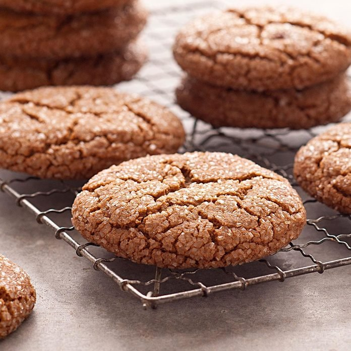

Giant Molasses Cookies

Total Time
30 min. Bake 15 min/batch
Servings
2 dozen
Ingredients
- 1-1⁄2 cups butter, softened
- 2 cups sugar
- 2 large eggs, room temperature
- 1⁄2 cup molasses
- 4-1⁄2 cups all-purpose flour
- 4 teaspoons ground ginger
- 2 teaspoons baking soda
- 1-1⁄2 teaspoons ground cinnamon
- 1 teaspoon ground cloves
- 1⁄4 teaspoon salt
- 1⁄4 cup chopped pecans
- 3⁄4 cup coarse sugar
Directions
- Preheat oven to 350°. In a large bowl, cream butter and sugar until light and fluffy. Beat in eggs and
molasses. Combine the flour, ginger, baking soda, cinnamon, cloves and salt; gradually add to creamed
mixture and mix well. Fold in pecans.
- Shape into 2-in. balls and roll in coarse sugar. Place 2-1/2 in. apart on ungreased baking sheets. Bake
13-15 minutes or until tops are cracked. Remove to wire racks to cool.
Nutrition Facts
1 cookie: 310 calories, 13g fat (7g saturated fat), 48mg cholesterol, 219mg sodium, 46g carbohydrate (27g sugars,
1g fiber), 3g protein.